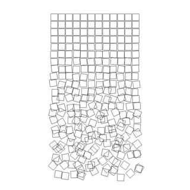
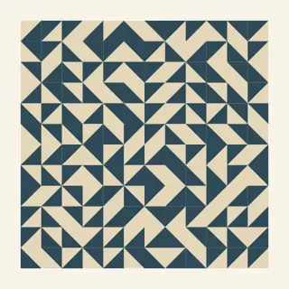
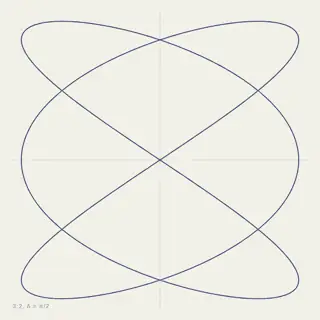

AN OPEN-ENDED COLLECTION
かたちを生む、
ルールに触れる。
線、反復、ゆらぎ。コードから生まれる作品を集めたギャラリーです。
変数を少し動かして、あなただけの一枚を見つけてください。
作品を探索する
03 WORKS
001 / GEOMETRY · RANDOMNESS
秩序とゆらぎ
整然と並ぶ正方形が、少しずつ自由になる。
作品をひらく →
002 / TILING · COMBINATION
四つの向き
二色に分けた一枚のタイルを、回して並べる。
作品をひらく →
003 / MATHEMATICS · OSCILLATION
ふたつの振動
横と縦、ふたつの周期が重なって一本の線になる。
作品をひらく →完成形より、変わる過程を。
同じルールから、異なる表情が生まれる。ここは生成の仕組みを眺め、触り、持ち帰る場所です。これからも、異なるアイデアによる作品を加えていきます。